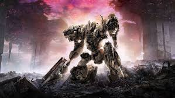
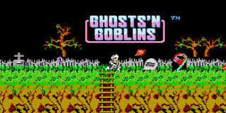
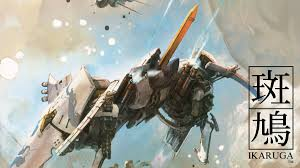
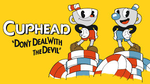

1. Armored Core VI: Fires of Rubicon
Iniziamo proprio dal nuovo titolo di From Software che, seppur con una formula più action e ben diversa dagli scontri all’arma bianca e magia dei Souls, propone un livello di sfida davvero notevole. In Armored Core VI vestiremo i panni di un mercenario chiamato Raven sul pianeta Rubicon, dove varie megacorporazioni si danno battaglia per la ricerca di una rara risorsa naturale. Gli scontri si svolgeranno a bordo di robot corazzati chiamati Core, completamente personalizzabili per quanto riguarda sia le armi che le componenti di movimento.
Nonostante la possibilità di schivare e spostarsi in ogni direzione e l’utilizzo di quattro armi in contemporanea, i boss del gioco rappresentano un duro scoglio, se non si capisce come affrontarli. Alcuni infatti saranno estremamente difficili da battere con certe configurazioni e la sfida del gioco starà nel capire quali sono i loro punti deboli e nello sfruttarli, cambiando le armi, tra quelle esplosive, laser o al plasma, e capacità di movimento del proprio Core. Come in ogni gioco di From Software, riuscire a prevalere sugli ostici boss fino ad arrivare alla conclusione darà enorme soddisfazione a qualsiasi giocatore.
2. Ghost’n Goblins
Se pensate che i soulslike siano difficili, probabilmente non avete mai avuto occasione di giocare lo storico Ghost’n Goblins, titolo di Capcom uscito su arcade e poi convertito anche su varie console, dalla difficoltà che dire brutale è quasi un complimento. Il nostro protagonista, Sir Arthur, deve salvare la sua amata da un terribile demone affrontando sette livelli pieni di nemici che spuntano senza preavviso e in continuazione da ogni angolo, oltre a temibili boss. Basteranno solo due colpi per far perdere una vita al nostro prode eroe, e tra trappole e avversari agguerriti sarà un’impresa non venire mai colpiti.
La beffa è che, una volta arrivati alla fine, dopo aver sudato sette camicie, ci viene detto che era tutta una trappola ordita dal nemico finale e il giocatore, se vuole vedere la vera fine del gioco, dovrà ripercorrere nuovamente tutti i livelli, resi ancora più difficili per l’occasione. Un vero incubo al solo pensarci.
3. Ikaruga
Tra i vari titoli presenti nelle sale giochi del passato, ce n'erano alcuni appartenenti a un particolare genere, definito “Bullet Hell” per la quantità infinita, su schermo, di proiettili presenti da evitare. Tra i tanti esponenti di questa tipologia, come rappresentante abbiamo scelto un titolo tanto popolare quanto difficile per i giocatori più appassionati, ossia Ikaruga. Questo gioco giapponese, creato dagli sviluppatori di Treasure, ci metteva a bordo di una navicella spaziale, per affrontare orde di nemici mentre si dovevano schivare quantità esagerate di proiettili, in particolar modo negli scontri con gli immancabili boss.
Come se non bastasse, il gioco aveva anche una meccanica che prevedeva di poter cambiare il colore della propria navicella da bianco a nero e viceversa: era così possibile assorbire, per potenziare i propri proiettili, quelli nemici con un colore corrispondente a quello scelto; allo stesso tempo bisognava essere però del colore inverso rispetto a quello dei nemici per infliggere loro del danno. Oltre a dei riflessi allenati, quindi, serviva anche una mente veloce, cosa che rendeva il gioco ancor più complesso, ma anche molto divertente.
4. Elden Ring
Non poteva mancare anche un titolo legato ai classici soulslike di From Software, e in rappresentanza dei dieci anni di questa tipologia di titoli creati dagli sviluppatori giapponesi abbiamo scelto lui, Elden Ring, l’apice di questo genere. Il motivo per cui, tra i soulslike, Elden Ring è il più difficile è la presenza di alcuni boss rimasti impressi nelle menti di milioni di giocatori per aver fatto vedere loro, un numero incalcolabile di volte, la classica schermata “You Died”. In particolare, Malenia è uno dei boss più difficili che From Software abbia mai creato, grazie anche a un attacco quasi impossibile da schivare correttamente, se non con tempistiche precise al millisecondo.
Esistono comunque molti modi per affrontare il gioco, tra evocazioni, poteri esagerati e la possibilità di giocare in cooperativa; la difficoltà di Elden Ring è scalabile in base a come si gioca e questa libertà è stata amata dagli oltre 20 milioni di giocatori che hanno acquistato il titolo. Certo, provate ad affrontare i boss in uno scontro uno contro uno e non penserete più che alla fine Elden Ring non sia poi così difficile.

5. Cuphead
Se pensate che i titoli difficili appartengano ormai al lontano passato, allora non avete ancora provato Cuphead. Il bellissimo indie di Studio MDHR ha conquistato tutti grazie alla splendida grafica, che ricorda i cartoni animati degli anni ’30 del secolo scorso, ma sotto a quei bellissimi disegni si nasconde un gioco di una complessità unica. Nei panni dei due fratelli Cuphead e Mugman, bisognerà affrontare una serie di sfide, soprattutto contro molteplici e pericolosi boss, di difficoltà sempre elevata. Ogni boss, in battaglia, avrà diverse fasi e la sconfitta vorrà dire ricominciare tutto dall’inizio.
In aiuto dei due fratelli ci saranno diversi tipi di armi e potenziamenti, ma quel che servirà per arrivare alla fine e battere il Diavolo in persona saranno soprattutto riflessi fulminei, con cui evitare tutte le miriadi di proiettili e colpi speciali che i vari nemici indirizzeranno contro i due sventurati protagonisti.
